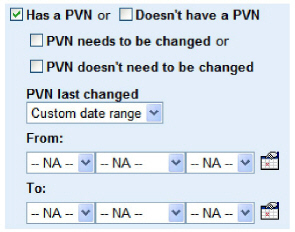

|
IdentityGuard Server 12.0 Administration Guide |
|
IdentityGuard Server 12.0 Administration Guide |
Administrators with applicable permissions can search for users who have or do not have a PVN.
Each PVN includes a last-changed-date attribute, so you can search for old PVNs and force users to update their PVN value.
To find users by personal verification numbers
1. Log in to the Administration interface (see Logging in and out of the Administration interface).
2. Click User Accounts on the main menu.
3. Click the Find Accounts tab.
4. Click Has the additional account characteristics below. The Additional Account Characteristics pane appears.
Look for the PVN options.

5. To find users with a personal verification number (PVN), select Has a PVN.
More options appear.
a. You can do one of the following:
– To find users who need to change their PVN, select PVN needs to be changed.
– To find users who do not need to change their PVN, select PVN doesn’t need to be changed.
b. To find users who last changed their PVN within a specific date range, select a date range from the PVN last-changed drop-down list.
If you selected Custom date range, choose a date range from the From and To drop-down lists (day, month, year), or click the calendar icons to select dates.
6. Alternatively, to find users without a personal verification number, select Doesn’t have a PVN.
7. Click Find Accounts.
8. Select a user on the Search Results page.
The Account Information pane appears for the user.
9. Under Authentication Types, click Personal Verification Number and review the PVN details.